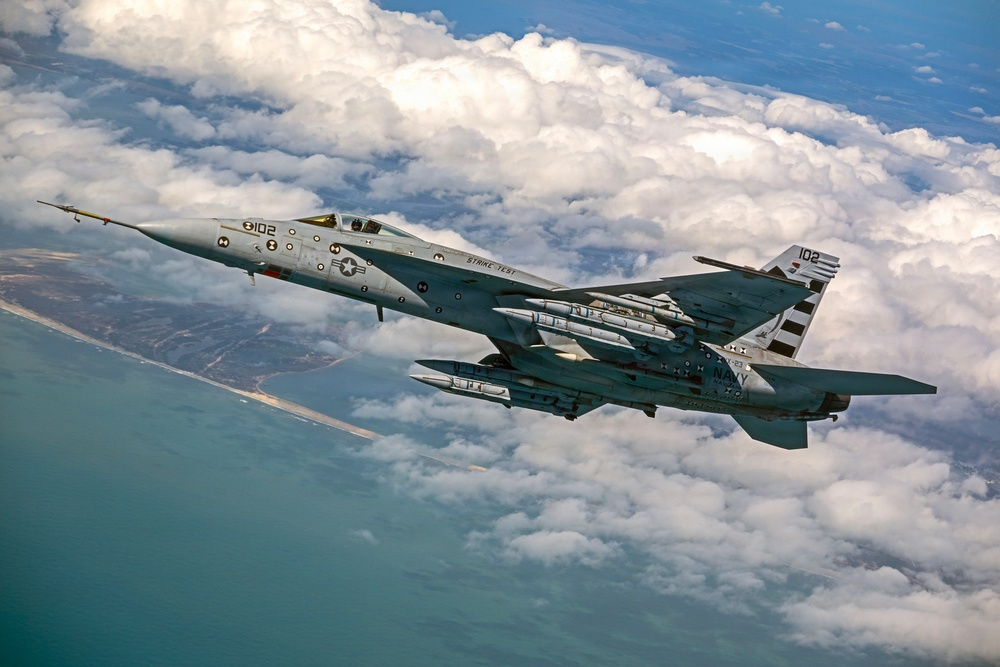

U.S. Navy file photo · DVIDS 9879419 · PUBLIC DOMAIN · Four AIM-424 LRAAM loaded on an F/A-18E Super Hornet for a test event. Date taken April 3, 2026; posted Aug. 22, 2026. Caption must say test load / file photo, not today’s Tailhook podium.
USNI News
USNI: Navy unveiled Malice at Tailhook, a 250-mile air-to-air missile
USNI reported Monday that the Navy revealed Malice at the Tailhook Association symposium over the weekend — a long-range air-to-air missile the service says can reach aerial targets 250 nautical miles out. USNI calls it AIM-242. Navy file photos posted Saturday on DVIDS show four AIM-424 LRAAM rounds on an F/A-18E Super Hornet from an April test. The Navy has not said how many are in inventory, and it has not explained why the two public designations do not match.
USNI News · Read source →